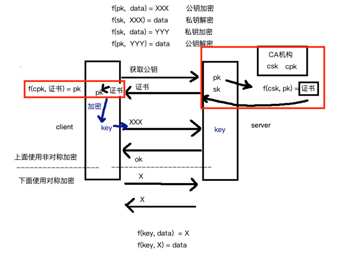

目录
HTTP相关
HTTP简介
超文本传输协议，一个简单的 请求-响应 协议，架构在TCP协议上，规定WWW服务器与浏览器之间信息传递规范。端口：80
基于TCP/IP通信协议（应用层）来传递数据（HTML 文件, 图片文件, 查询结果等）
HTTP的请求方式
| 方 法 | 描 述 |
|---|---|
| GET | 向Web服务器请求一个文件 |
| POST | 向Web服务器发送数据让Web服务器进行处理 |
| PUT | 向Web服务器发送数据并存储在Web服务器内部 |
| HEAD | 检查一个对象是否存在 |
| DELETE | 从Web服务器上删除一个文件 |
| CONNECT | 对通道提供支持，代理服务器 |
| TRACE | 一种调试方法，该方法使得服务器原样返回任何客户端请求的内容 |
| OPTIONS | 返回服务器针对特定资源所支持的HTTP请求方法，GET、POST |
HTTP 请求消息Request

HTTP响应消息Response

HTTPS相关
什么是HTTPS
《图解HTTP》这本书中曾提过HTTPS是身披SSL外壳的HTTP。HTTPS是一种通过计算机网络进行安全通信的传输协议，经由HTTP进行通信，利用SSL/TLS建立全信道，加密数据包。HTTPS使用的主要目的是提供对网站服务器的身份认证，同时保护交换数据的隐私与完整性。
HTTPS的加密原理
HTTPS是 HTTP + 加密（数据对称加密和公钥非对称加密） + 认证 + 完整性保护

公钥非对称加密过程（非对称加密key）
客户端先通过请求，获取服务端的pk，拿到之后，我们可以在客户端随机产生一个key，然后通过f(pk，key)=XXX的方式，把XXX传输给服务端，这样服务端就可以通过私钥(sk)对XXX进行解密，从而得到key。
数据对称加密过程
客户端使用key对数据进行加密，服务端就可以使用key进行解密了。为什么数据不用非对称加密？因为数据比较大，影响传输速度。
为何引入CA证书机构？
公钥pk是不能直接在客户端和服务端直接传输的，否则很容易被黑客窃取。
‘CA机构’是一种信用机构，靠信用赚钱。CA机构也会有自己的公钥(cpk)和私钥(csk)，可以使用csk对于pk公钥进行加密，从而得到证书，我们可以把证书传递给前端，让前端利用浏览器内部自带的公钥(cpk)对证书进行解密，如果解密成功，则可以获取到pk，随后再利用pk对前端生成的key进行加密。
以上就是HTTPS加密传输的原理。